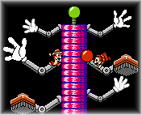

Введение

ТАСинг – это процесс создания экстраординарного прохождения игры. Для настоящего ТАСера недостаточно просто пройти игру до конца, требуется сделать нечто настолько необычное, что это оправдает использование инструментов.
Для этого и мыслить требуется нестандартно. Во время нормальной игры практически весь ход наших мыслей определяется игровыми правилами, за несоблюдение которых игра штрафует геймовером и другими средствами. Несложными психологическими приёмами игра направляет фантазию игрока в нужное русло, чтобы дать ему правдоподобную атмосферу целостного мира и удержать его в запланированной разработчиками зоне комфорта.
Поэтому для успешного создания неординарного прохождения ТАСеру необходимо не только в совершенстве владеть инструментами эмулятора, но и уметь мысленно абстрагироваться от правил игры, при этом физически оставаясь в рамках этих правил (ведь ТАСинг – это не читерство, нельзя воздействовать на игру иначе как кнопками джойстика).
Раньше ТАСинг, как и обычные спидраны, мало чем отличался от нормального процесса прохождения видеоигры. ТАСер просто запускал эмулятор, включал режим записи кнопок и проходил игру, часто сохраняясь и загружаясь, а в наиболее насыщенные моменты замедляя игровой процесс, чтобы компенсировать медленную реакцию человеческого организма.
Возможность исправлять свои ошибки раскрепощает фантазию человека и побуждает его экспериментировать. Иллюзии конкретной игры уже менее ограничивают спектр мыслей ТАСера. Но на ход мыслей всё ещё оказывают влияние стереотипы реального физического мира. Например, если опасный объект убивает персонажа, то логично предположить, что он убивает всегда. Хотя на самом деле может оказаться, он убивает только в чётные кадры или только при обнулении дробной части координат. Но об этом невозможно догадаться, используя одни лишь сэйвы и замедление. Нужно сначала перестать быть игроком, чтобы стать независимым исследователем.
Большим прорывом в истории развития ТАСинга стал Frame Advance – покадровая эмуляция игр. Теперь при ТАСинге игра постоянно стоит на паузе, предоставляя ТАСеру возможность размеренно анализировать каждый аспект геймплея по отдельности. Раньше (при простом замедлении) игра не переставала быть связным потоком событий, которые игрок вынужден воспринимать как единый коктейль переживаний и эмоций. А теперь при покадровой игре ТАСер может обособить в голове любое отдельно взятое событие текущего кадра. Это значительно меняет принципы восприятия игровой информации. Стереотипы материального мира уже не диктуют ТАСеру, как действовать в мире виртуальном, и человек видит игру более объективно, а значит, может обнаружить несовершенства/лазейки в её правилах.
Хотя сама игра по-прежнему пытается навязать игроку типовые шаблоны поведения, и новичку справляться с этим сложнее, чем опытному ТАСеру. Именно поэтому опытным ТАСерам гораздо легче обогнать чужой спидран – не из-за ловкого владения инструментами, а из-за "профессиональной деформации", позволяющей легко замечать уязвимости в играх.
С тех пор было изобретено ещё много инструментов ТАСинга, однако сам способ взаимодействия ТАСера с игрой оставался без изменений. ТАСер редактирует Ввод в той же последовательности, в которой течёт время в игре. Эта линейность процесса формирует определённые ограничения в мышлении ТАСера. Когда вы привыкаете после каждого нажатия кнопки получать от игры визуальное подтверждение срабатывания этой кнопки, вы ассоциируете себя с игровым персонажем. Из-за этого вам гораздо труднее взглянуть на происходящее "со стороны". А ведь от ТАСера требуется максимально объективный взгляд на игру.
Разработка инструментального комплекса под названием "TAS Editor" преследует две основные цели:
1) понизить порог вхождения в ТАСинг для новичков
2) повысить объективность оценки игрового процесса
Первая цель достигается с помощью детальной визуализации всех аспектов ТАСинга.
Вторая цель достигается с помощью перехода от линейного переписывания отрезков мувика к нелинейному редактированию Ввода. Более высокий уровень абстрагирования от правил проходимой игры достигается за счёт появления у ТАСера новых возможностей:
В дополнение к этому в TAS Editor 1.0 реализован новый уровень большинство старых инструментов ТАСинга:
● журнал лага – эволюция Счётчика лага
● журнал нажатых кнопок – эволюция Индикатора Ввода
● пошаговый откат – в дополнение к загрузкам старого состояния мувика
● встроенный редактор – вместо хекс-редактора и Блокнота
● номер и название текущего логического блока – в дополнение к номеру текущего кадра
● счётчик Выделения (линейка) – в дополнение к счётчику кадров
● шаблоны – вместо настроек Autofire
● Superimpose (наложение) – вместо настроек Auto-hold
Запуская Тасэдитор, приготовьтесь к управлению игрой с высоты птичьего полёта. Если вы уже имеете опыт ТАСинга традиционным способом, некоторые аспекты обучения покажутся вам проще, а некоторые сложнее, чем для новичка. Старые привычки могут помешать взглянуть на ТАСинг под другим углом зрения. Однако постарайтесь прочитать весь Курс до конца, вы наверняка узнаете много нового о ТАСинге в целом.
Одной из наиболее непривычных особенностей ТАСинга в Тасэдиторе является упор на мышиное управление. Мышка даёт пользователю высокую скорость редактирования Ввода и удобство перемотки Проигрывателя. Хотя большинство функций Тасэдитора имеют свои аналоги на клавиатуре, без мыши комфортная и эффективная работа невозможна.
Традиционный метод ТАСинга не так уж далеко ушёл от обычного прохождения игры с геймпадом или клавиатурой в руках. Геймпад является эффективным средством для создания кнопочного Ввода. Однако основную часть времени ТАСер проводит за различными манипуляциями с однажды совершённым Вводом. И здесь уже удобнее использовать не геймпад, а клавиатуру или мышку. Например, нажатиями одной клавиши вы сможете передвинуть часть Ввода, чтобы она воспринималась игрой на кадр позже или раньше. А когда требуется изменить высоту прыжка (то есть длительность зажатия кнопки A), проще сделать это одним щелчком, чем переключаться в режим Записи и набирать весь диапазон кадров заново.
Тем не менее, при желании можно работать в Тасэдиторе точно так же, как делали мувики раньше. Тасэдитор поддерживает все существенные аспекты традиционного метода ТАСинга. Если использовать окно Тасэдитора только в качестве информационной панели где-нибудь у края экрана, вы можете даже не заметить никаких изменений в своей работе. Это хорошая причина для плавного перехода от устаревшего метода ТАСинга к новому. Поначалу вам могут приглянуться второстепенные фичи Тасэдитора, такие как визуализация лага и Дерево ответвлений. Позже может потребоваться небольшой копипаст Ввода, при котором Тасэдитор послужит быстрой заменой внешнему редактору. И через некоторое время вы обнаружите, что непосредственное редактирование Ввода работает быстрее перезаписи.

Преимущество нового метода ТАСинга перед традиционным очевиднее всего проявляется при создании ТАСов с управлением двумя и более игроками одновременно. В своё время для традиционного ТАСинга были придуманы различные костыли вроде автозажатия (Auto-hold), назначения нескольких кнопок на одну клавишу, создания макросов и скриптов для мультитрекинга. С Тасэдитором всё это становится неактуальным, так как ТАСер больше не вынужден вживаться в роль игрока, который ассоциирует себя с управляемым персонажем. Теперь вы не играете, а размышляете над разложенной по полочкам игрушкой и создаёте сценарий действий в виде Ввода. Так что нет большой разницы, находится ли под вашим управлением один, два или множество персонажей.
Тасэдитор также задуман как средство борьбы с рутиной. В ТАСинге всегда было много нудных повторяющихся действий. Конечно, программа не избавляет от необходимости проверять все возможные варианты развития игровой ситуации, но она автоматизирует ряд вещей и даёт прирост эффективности в мелочах, позволяя ТАСеру сохранять терпение дольше, чем при полностью ручном ТАСинге.
Интересные факты:
● Во время создания Тасэдитора на продумывание деталей и способов усовершенствования рабочего процесса ушло больше времени, чем на написание кода.
● Большинство действий в Тасэдиторе можно совершить несколькими способами.
● Любую совершённую операцию можно откатить или повторить.
● Можно полностью игнорировать любую часть функционала Тасэдитора, используя только приглянувшиеся фичи.
Особое внимание было уделено пользовательскому интерфейсу. Когда наберётесь опыта, сможете совершать многие действия машинально, не отвлекаясь от анализа игровой ситуации.
Если у вас появится какая-нибудь идея по уменьшению рутинности ТАСинга – пишите на форум TASVideos. Многие идеи, воплощённые в Тасэдиторе, когда-то были озвучены на этом форуме в качестве "инструментов мечты".
Помимо нового подхода к ТАСингу Тасэдитор также предлагает средства для организации рабочего процесса. Из-за бессистемного подхода многие новички тратят большую часть времени неэффективно, распыляют силы, быстро устают и в итоге получают далёкий от идеала ТАС. Со временем они вырабатывают некий набор приёмов и привычек, становятся опытными ТАСерами. Но приёмы традиционного метода довольно плохо поддаются словесному объяснению (до сих пор они не были формализованы), поэтому каждому новому ТАСеру приходится учиться на собственных ошибках. В этом Курсе мы попытаемся сформировать чёткое представление о методичном ТАСинге, как традиционном, так и новом.
Рабочий процесс в Тасэдиторе во многом похож на программирование с использованием интерпретируемого языка. Вы редактируете код и одновременно видите результат исполнения кода на экране. ТАСер может мгновенно увидеть результат своих промежуточных действий на экране, а может увлечься конструированием одного участка "кода" и просмотреть результат лишь после завершения конструкции.
У программистов есть ценная традиция – повышение читабельности кода с помощью комментариев. Это позволяет держать в голове более чёткую картину проекта и обходиться без постоянной перепроверки результатов, потому что в большинстве случаев результат весьма предсказуем, когда известен контекст. Более того, высокая читабельность кода позволяет при возвращении к отложенному проекту быстро освежить все необходимые воспоминания. Конечно, если программист добросовестно документировал свой код во время его написания.
Теперь и ТАСер может документировать свой проект прямо в процессе создания – писать комментарии, присваивать структурам (шаблонам и блокам Ввода) понятные имена, тестировать различные версии кода в отдельных ветках репозитория (Дерева ответвлений), продуктивно работать в соавторстве с другим ТАСером. При этом от пользователя не требуется соблюдать какие-либо конвенции. Вы сами определяете правила оформления своего проекта. Например, если вы не поленились в первом уровне дать название использованному трюку, в следующих уровнях вы сможете продублировать нужную последовательность кнопок всего несколькими нажатиями клавиш, если поленились – придётся отыскать место выполнения трюка вручную. В простеньких ТАСах можно обойтись без комментариев и долгосрочных планов, однако в сложных проектах этот функционал Тасэдитора может весьма пригодиться.
Сайт TASVideos.org поддерживает загрузку проектов Тасэдитора (fm3-файлов) в сабмишенах, так что вы можете делиться не только готовым мувиком, но и своими наработками, поощряя атмосферу открытости и взаимопомощи. Если не хотите делиться, можете экспортировать данные в формат fm2 и опубликовать только его.
FM3-файлы проигрываются эмулятором FCEUX начиная с версии 2.1.6 точно так же, как FM2-файлы. В более ранних версиях FCEUX fm3-файлы также можно проиграть, предварительно поменяв расширение файла на fm2.
В следующей главе: обзор интерфейса и обучение основам работы с программой.
Created with the Personal Edition of HelpNDoc: Full featured Documentation generator